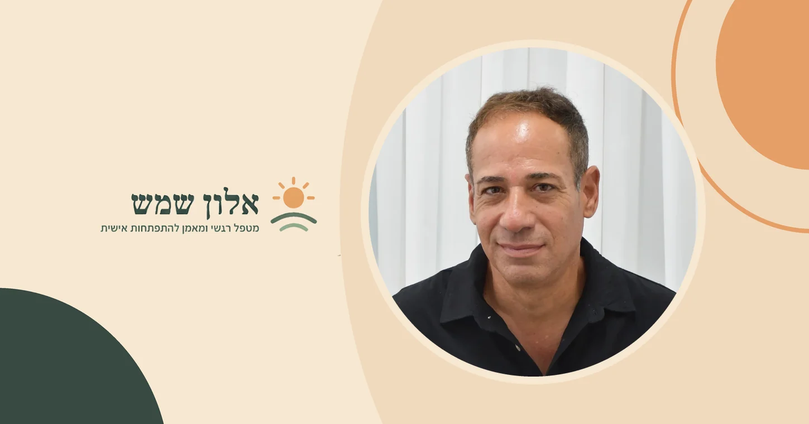

ישנו תפקיד חדש שנפתח בצוות, ואתם כבר יודעים מי יכולה להתאים לו.
היא מקצועית, מוערכת, מכירה את הארגון וכבר הוכיחה שהיא מסוגלת לקחת אחריות. המכרז הפנימי נסגר, ושמה לא מופיע ברשימת המועמדים.
בסוף אחת הישיבות אתם שואלים אותה למה לא הגישה מועמדות.
"אני לא בטוחה שאני שם", היא עונה.
קל לשמוע במשפט הזה צניעות או שיקול דעת מקצועי. לפעמים זה באמת המצב. אבל לפעמים מסתתר מאחוריו משהו אחר: לא הערכה עניינית של הסיכויים, אלא מסקנה שהעובדת כבר קיבלה לגבי עצמה.
"אני עדיין לא מספיק טובה."
"אני לא מהאנשים שמובילים."
"אני לא רוצה לדחוף את עצמי."
"אני צריכה לדעת הכול לפני שאני יכולה לקחת אחריות."
אלה כבר לא רק מחשבות על התפקיד שנפתח עכשיו. אלה כללים פנימיים שיכולים להשפיע על האופן שבו אדם מפרש הזדמנויות, סיכונים והחלטות.
וכשהם חוזרים שוב ושוב, עובד מצוין יכול להישאר במשך שנים צעד אחד מאחורי היכולת האמיתית שלו.
לפעמים מה שנראה כמו תקיעות בקריירה מתחיל בכלל במקום אחר
אני פוגש את הנקודה הזאת גם בעבודה הפרטנית שלי.
אנשים מגיעים אליי לא בהכרח משום שהם "לא מצליחים בעבודה". לעיתים דווקא להפך. הם עובדים טובים, אחראים, מקצועיים ומוערכים.
אבל משהו לא מתקדם.
הם נשארים שנים בתפקיד שכבר קטן עליהם. נמנעים מלבקש העלאה. לא מגישים מועמדות לתפקיד שהם רוצים. מתקשים לדבר בישיבות למרות שיש להם מה לומר. דוחים שוב ושוב שינוי מקצועי שהם חושבים עליו כבר הרבה זמן.
מבחוץ קל לקרוא לזה חוסר ביטחון.
אבל חוסר ביטחון הוא לפעמים רק התוצאה הנראית לעין.
מתחתיו יכולים להיות דפוסים ואמונות עמוקים יותר: פחד מדחייה, צורך להיות מושלמים לפני שעושים צעד, קושי לתפוס מקום, חשש מלאכזב, פחד לטעות או אמונה שהערך שלנו תלוי בכך שנצליח בכל דבר שאנחנו עושים.
כמטפל רגשי וכמאמן להתפתחות אישית, אני עובד גם עם אנשים שמרגישים תקיעות כזאת בעולם העבודה. המטרה אינה לומר להם שהם "צריכים פשוט להאמין בעצמם", אלא להבין מה באמת מפעיל את העצירה ולבנות דרך מעשית שמאפשרת להתחיל לנוע אחרת.
מהי אמונה מגבילה, ואיך היא נכנסת לעבודה?
אמונה מגבילה היא תפיסה שאדם מחזיק לגבי עצמו, לגבי אחרים או לגבי הדרך שבה העולם פועל, תפיסה שמצמצמת את האפשרויות שהוא מרשה לעצמו לשקול.
הבעיה אינה בעצם קיומה של מחשבה כמו "אני לא טוב בפרזנטציות". לכולנו יש הערכות לגבי החוזקות והחולשות שלנו.
השאלה היא מה קורה אחריה.
אם המחשבה מובילה ל"אני צריך להתאמן יותר לפני המצגת הבאה", יש כאן קושי שאפשר לעבוד איתו.
אבל אם היא הופכת ל"אני פשוט לא טיפוס של פרזנטציות", מיומנות הפכה לזהות.
מדובר על הבדל משמעותי.
מיומנות אפשר ללמוד. ניסיון אפשר לצבור. התנהגות אפשר לשנות.
אבל כאשר אדם מתאר מגבלה כחלק ממי שהוא, הוא עלול להפסיק לבדוק אם היא עדיין נכונה.
איך אמונות מגבילות נשמעות בעולם העבודה?
אמונות מגבילות כמעט אף פעם לא מגיעות עם שלט שאומר "זו אמונה מגבילה".
לעיתים הן אפילו נשמעות אחראיות מאוד.
"אני לא טיפוס של פרזנטציות"
מיומנות מתוארת כתכונת אופי.
במקום לומר "קשה לי כרגע להציג מול אנשים", האדם מספר לעצמו שזה פשוט לא מי שהוא.
והמשפט הזה משפיע על הרבה יותר מהמצגת הקרובה. הוא יכול לגרום לו להימנע מתפקידים שבהם נדרשת נוכחות, הצגה או הובלה.
"אחרי שאסיים את הפרויקט הזה אחשוב על קידום"
לפעמים זו החלטה הגיונית לחלוטין.
אבל אם אחרי כל פרויקט מגיע עוד פרויקט, ועוד סיבה לחכות, כדאי לבדוק האם העומס באמת עוצר את הצעד, או שהוא מאפשר לדחות החלטה שמפחידה אותנו.
"לא נעים לי לבקש"
משפט קטן שיכול לעלות ביוקר לאורך קריירה שלמה.
לא נעים לבקש העלאה.
לא נעים לבקש עזרה.
לא נעים לומר שהעומס גדול מדי.
לא נעים להציג מועמדות.
לא נעים להגיד "אני רוצה את התפקיד הזה".
מאחורי כל אלה יכולה להסתתר אמונה רחבה הרבה יותר: שהצרכים שלי מכבידים על אחרים, או שלתפוס מקום פירושו לקחת משהו ממישהו אחר.
"אין טעם, ממילא כבר החליטו"
יכול להיות שבאמת כבר החליטו.
אבל לפעמים אנחנו מעדיפים לדעת מראש שהתשובה תהיה "לא" מאשר להסתכן בלשמוע אותה.
אם לא הגשתי מועמדות, לא נכשלתי.
אם לא ביקשתי העלאה, לא סירבו לי.
אם לא הצגתי את הרעיון, אף אחד לא דחה אותו.
הימנעות מגינה עלינו בטווח הקצר, אבל היא גם משאירה אותנו בדיוק באותו המקום.
מתי זה כבר לא רק שיקול מקצועי?
חשוב לא להפוך כל היסוס לאמונה מגבילה.
לפעמים עובד באמת עדיין אינו מוכן לתפקיד. לפעמים הוא פשוט לא רוצה לנהל. לפעמים לא נכון לו להחליף מקום עבודה עכשיו.
הבדיקה המעניינת מתחילה כשהבחירה חוזרת על עצמה.
כשאותו אדם רוצה להתקדם, אבל לא מגיש מועמדות.
רוצה לעזוב, אבל בכל שנה מוצא סיבה חדשה להישאר.
רוצה לדבר יותר, אבל בכל ישיבה מחכה לרגע הנכון שלא מגיע.
יודע שהוא צריך להציב גבול, אבל אומר כן שוב ושוב.
במצבים כמו אלו, ישנו פער בין מה שאני באמת רוצה לבין מה שאני מצליח לעשות בפועל.
והפער הזה הוא לעיתים המקום שבו מתחילה העבודה האמיתית.

בטיפול ובאימון אישי, אפשר להיכנס לדפוס הספציפי של האדם: להבין מה עוצר אותו, מה מפעיל אותו, איפה הדפוס מופיע בחיים ולבנות צעדים מעשיים שמאפשרים תנועה.
אולי אתם לא צריכים עוד מוטיבציה
אם אתם מרגישים תקועים מקצועית, קל לחשוב שחסר לכם משהו.
עוד ביטחון.
עוד ניסיון.
עוד מוטיבציה.
עוד קורס.
לפעמים זה באמת מה שחסר.
אבל לפעמים יש לכם כבר הרבה יותר יכולת ממה שאתם מרשים לעצמכם להשתמש בה, וזו בדיוק נקודת המוצא של העצמה אישית.
אני אלון שמש, מטפל רגשי ומאמן להתפתחות אישית. במסגרת העבודה שלי אני מלווה גם אנשים שחווים תקיעות בעולם העבודה והקריירה, אנשים שרוצים להתקדם, לעשות שינוי, להציב גבולות, לתפוס יותר מקום או פשוט להרגיש שהם לא ממשיכים לנהל את הקריירה שלהם מתוך אותם פחדים ודפוסים.
העבודה ממוקדת בזיהוי מה שמעכב את התנועה, בהבנת הדפוסים והאמונות שנמצאים מתחת לפני השטח ובתרגום של ההבנה לצעדים שאפשר להתחיל לעשות בפועל.
אם אתם מרגישים שיש פער בין המקום שבו אתם נמצאים היום לבין המקום שאתם יודעים שאתם יכולים להגיע אליו, אפשר להתחיל דווקא משם.
שאלות שאני שומע סביב תקיעות בעבודה
איך אדע אם אני באמת לא מוכן לקידום או שאני פשוט מפחד?
לא חייבים לבחור מיד בין שתי האפשרויות. אפשר להתחיל בשאלה קונקרטית: מה בדיוק חסר לי? אם אפשר להגדיר מיומנות, ניסיון או ידע שחסרים, ישנם עם מה לעבוד.
האם צריך לעזוב מקום עבודה כדי לצאת מתקיעות?
לא בהכרח. לפעמים מקום העבודה באמת אינו מאפשר התפתחות והשינוי הנכון הוא לעבור הלאה. אבל אם אותו דפוס חוזר בכמה מקומות עבודה שונים, החלפת החברה לבדה לא בהכרח תשנה אותו. אפשר לעבור למשרד חדש ולקחת איתנו בדיוק את אותו הפחד.